Driving Axles—Removable Carrier Type · 15-02-05
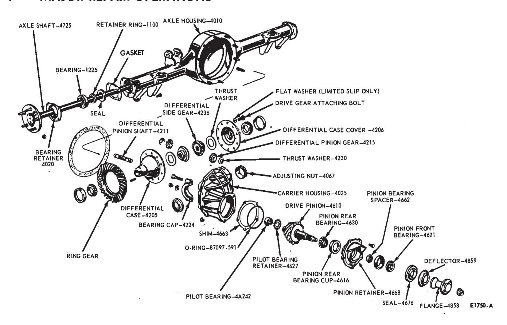
Fig. 16 — Rear Axle Disassembled—Typical Removable Carrier With Conventional Differential
Differential Carrier Disassembly
Conventional Differential
A disassembled view of the rear axle assembly is shown in Fig. 16.
After mounting the carrier in a holding fixture, disassemble the carrier as outlined in the following procedures:
-
Mark one differential bearing cap and the mating bearing support with punch marks to help position the parts properly during assembly of the carrier. Also, mark one of the bearing adjusting nuts and the carrier with scribe marks for proper location during assembly.
-
Remove the adjusting nut locks, bearing caps, and adjusting nuts. Then lift the differential case assembly out of the carrier.
(Remove the bearing caps by tapping the caps lightly with a soft mallet).
-
Remove the differential bearings with the tools shown in Fig. 17.
-
Mark the differential case, cover, and ring gear for assembly in the original position.
-
Remove the bolts that attach the ring gear to the differential case. Press the gear from the case or tap it off with a soft-faced hammer.
-
With a drift, drive out the differential pinion shaft lock pin (Fig. 18), and separate the 2-piece differential case.
-
Drive out the pinion shaft with a brass drift (Fig. 19).
-
Remove the gears and thrust washers (Fig. 47).
Traction-Lok Differential
-
Remove the differential case from the carrier and remove the bearings from the differential case in the same manner as the conventional differential case.
-
Remove ten bolts and washers securing the ring gear to the differential case assembly. The ring gear must be removed in order to separate the case halves.
-
Remove the ring gear by tapping the gear with a soft hammer or press the gear from the case.
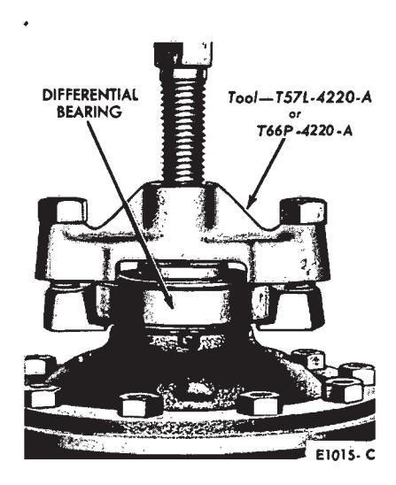
Fig. 17 — Removing Differential Bearing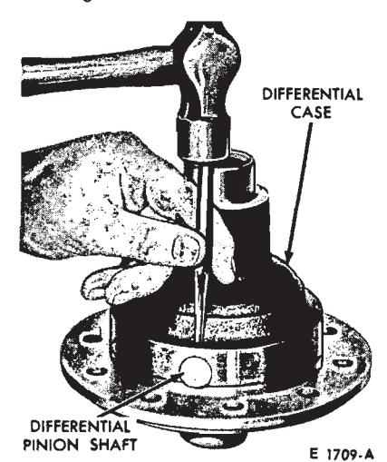
Fig. 18 — Removing Differential Pinion Shaft Lock Pin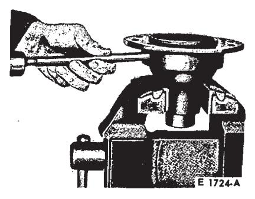
Fig. 19 — Driving Out Differential Pinion Shaft -
Place the differential case in a press to load the bearing journals so that the pre-load of the springs is overcome (approx. 1.500 lbs.). (If a press is not available, two 7/16 inch bolts and nuts can be used in the ring gear mounting holes (one on each side) to compress the case halves together and overcome pre-load spring tension.) Then, while the case is still under pressure, loosen the two Allen or Phillips head screws which hold the case halves together until one or two threads of the screws remain engaged. Remove the case assembly from the press. Tap on the cover to
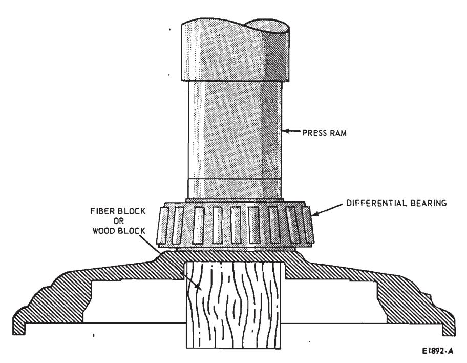
Fig. 20 — Installing Differential Bearing—Traction-Lok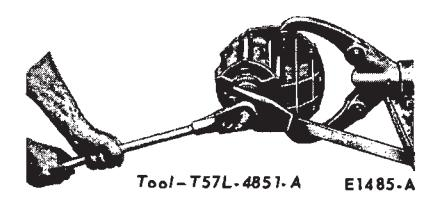
Fig. 21 — Removing Pinion Shaft Nut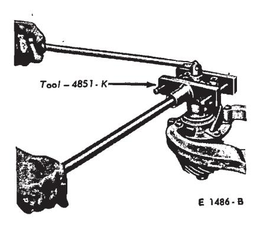
Fig. 22 — U-Joint Flange Holding Tool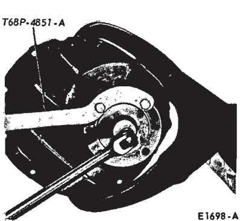
Fig. 23 — Companion Flange Holding Toolspring it loose: then, remove both screws.
-
With the cover facing down, lift off the case. Remove the pre-load spring plate and four pre-load springs.
-
From the cover remove the side gear, four clutch plate ear guides, clutch hub, friction and steel clutch plates and shim(s).
-
With a suitable drift, drive out the pinion shaft lock pins from the case
-
With a brass drift, drive out the long pinion shaft from the case. Drive from the end opposite the lock pin hole.
-
Remove the two short pinion shafts (four-pinion differential only) using a drift, driving each shaft from the center outward.
-
Lift out the center block, then remove the pinion gears, thrust wash- ers and side gear and thrust washer.
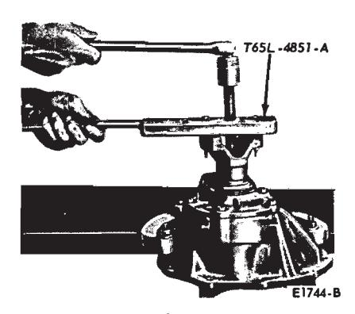
Fig. 24 — Removing U-Joint Flange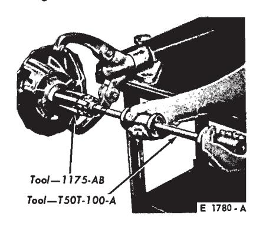
Fig. 25 — Removing Pinion Seal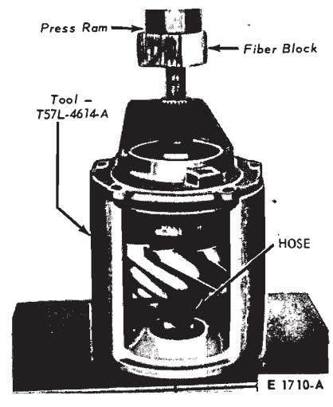
Fig. 26 — Removing Pinion Front Bearing -
If the differential bearings are removed, the bearings can be installed in one of the following ways:
- a. With the differential case and cover completely assembled.
- b. On the case or cover when disassembled. However, when pressing the bearings on the cover, a block of wood or fiber must be used as shown in Fig. 20 in order to avoid damage to the cover:
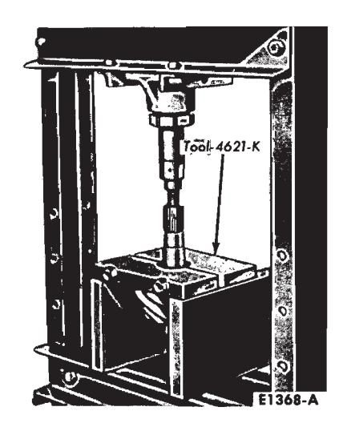
Fig. 27 — Removing Pinion Rear Bearing Cone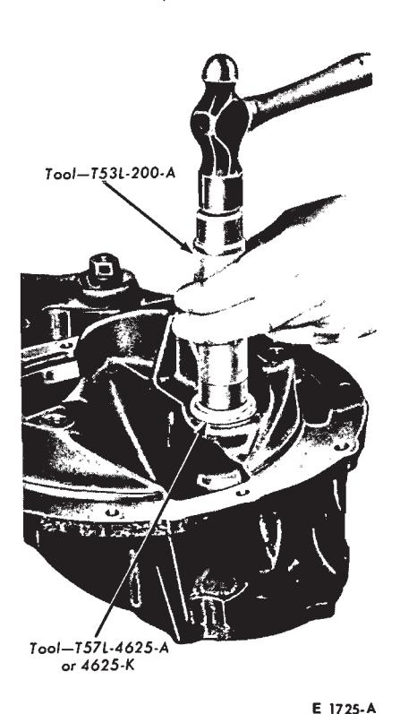
Fig. 28 — Removing Pilot Bearing
Removal and Disassembly of Drive Pinion and Bearing Retainer
-
Turn the carrier assembly upright and remove the pinion shaft nut (Fig. 21 and 22).
-
Remove the U-joint flange from the pinion shaft (Fig. 24).
-
Remove the pinion seal (Fig. 25).
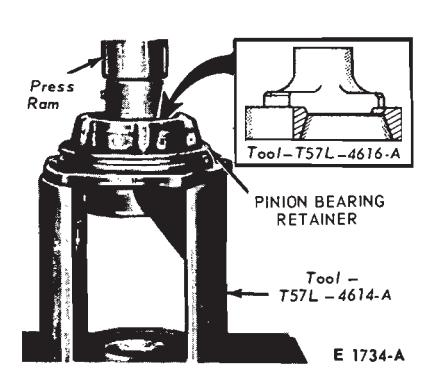
Fig. 29 — Removing Pinion Front Bearing Cup -
Remove the pinion, bearing, and retainer assembly from the carrier housing (Fig. 41). Measure the shim thickness with a micrometer. Record this original shim thickness. If a new gear set is installed during assembly, a new shim will have to be installed. The original shim thickness is one of the factors necessary in determining the new shim thickness. Extreme care must be taken not to damage the mounting surfaces of the retainer and carrier.
-
Place a protective sleeve (hose) on the pinion pilot bearing surface. Press the pinion shaft out of the pinion front bearing cone with the tool shown in Fig. 26.
-
Press the pinion shaft out of the pinion rear bearing cone and roller (Fig. 27).
Pilot Bearing
- Remove the pilot bearing as shown in Fig. 28. Drive out the pilot bearing and the bearing retainer together.
Pinion Bearing Cups
Do not remove the pinion bearing cups from the retainer unless the cups are worn or damaged. The flange and pilot of the retainer are machined during manufacture by locating on these cups after they are installed in their bores. If the cups are worn or damaged, they should be replaced.
Remove the bearing cups as shown in Figs. 29, 30 and 31. Install the cups as shown in Figs. 32 and 33.
After the new cups are installed, make sure they are seated in the retainer by trying to insert a 0.0015-inch feeler gauge between the cup and the bottom of the bore.
Whenever the cups are replaced, the cone and roller assemblies should also be replaced.
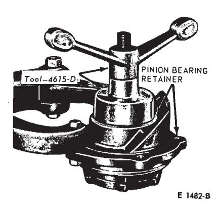
Fig. 30 — Removing Pinion Front Bearing Cup
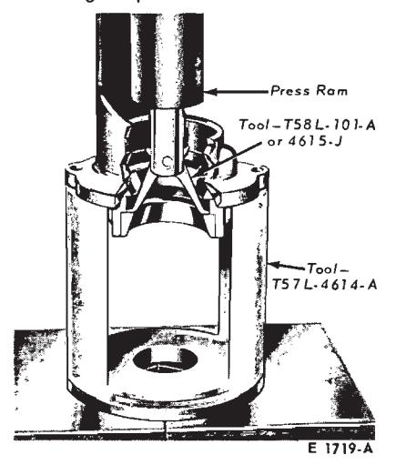
Fig. 31 — Removing Pinion Rear Bearing Cup
Drive Pinion and Ring Gear Set
When replacing a ring gear and pinion, note that the original factory installed shim is of the correct thickness to adjust for individual variations in both the carrier housing dimension and in the original gear set dimension. Therefore, to select the correct shim thickness for the new gear set to be installed, follow these steps:
-
Use a micrometer to measure the thickness of the original shim removed from the axle and use the same thickness upon installation of the replacement carrier assembly or drive pinion. If further shim change is necessary, it will be indicated in the tooth pattern check.
-
If the original shim is lost, substitute a nominal shim for the original and use the tooth pattern check to determine if further shim changes are required. Nominal shim thicknesses are indicated in Specifications.
A new ring gear and pinion should always be installed in an axle as a matched set (never separately). Be sure the same identifying (matching) number, appears on the bolt hole face of the ring gear and on the head of the drive pinion (Fig. 34).
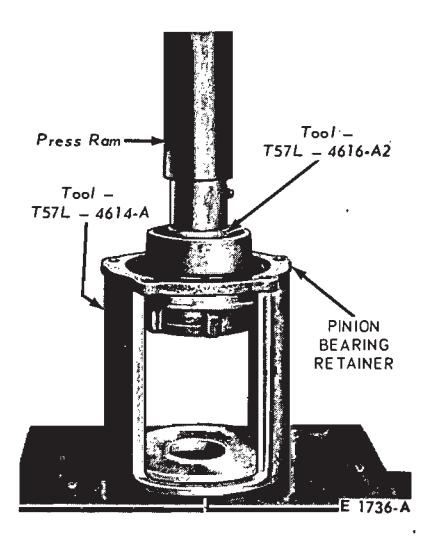
Fig. 32 — Installing Pinion Front Bearing Cup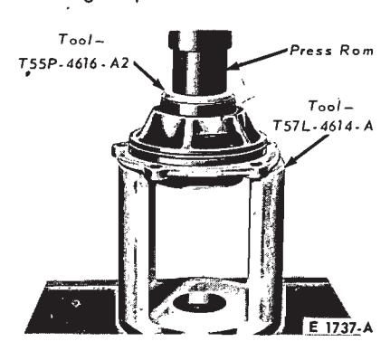
Fig. 33 — Installing Pinion Rear Bearing Cup -
After determining the correct shim thickness as explained in the foregoing steps, install the new pinion and ring gear as outlined under Assembly.
Differential Case Bearings and Ring Gear Test
If the ring gear runout check (before disassembly) exceeded specifications, the condition may be caused by a warped gear, a defective case, or excessively worn differential bearings.
To determine the cause of excessive runout proceed as follows:
-
Assemble the two halves of the differential case together without the ring gear, and press the two differential side bearings on the hubs.
-
Place the cups on the bearings and set the differential case in the carrier.
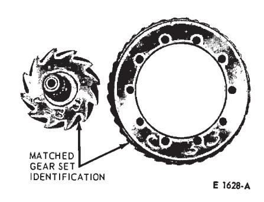
Fig. 34 — Pinion and Ring Gear Markings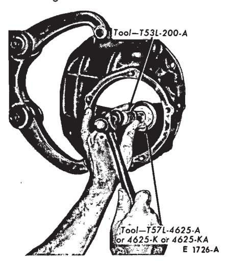
Fig. 35 — Installing Pilot Bearing -
Install the bearing caps and adjusting nuts as outlined in Steps 11 thru 14 under Assembly and Installation of Conventional Differential Case which follows in this section.
-
Tighten the right nut two notches beyond the position where it first contacts the bearing cup. Rotate the differential case several revolutions in each direction while the bearings are loaded to seat the bearings in their cups. This step is important.
-
Again loosen the right nut to release the preload. Check to see that the left nut contacts the bearing cup. Using the dial indicator set-up shown in Fig. 14, Part 15-1, adjust the preload to 0.008 to 0.012 case spread for new bearings or 0.005 to 0.008 for the original bearings, if re-used.
-
Check the runout of the differential case flange with a dial indicator. If the runout does not now exceed specifications, install a new ring gear. If the runout still exceeds specifications, the ring gear is true and the trouble is due to either a damaged case or worn bearings.
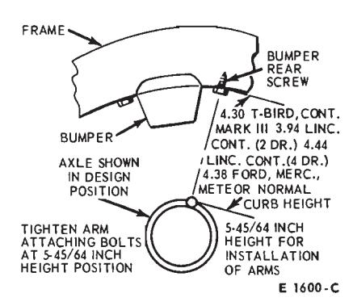
Fig. 14 — Axle Normal Curb Height and Controlled Height for Arm Installation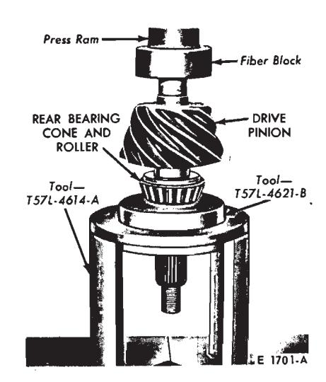
Fig. 36 — Installing Pinion Rear Bearing Cone
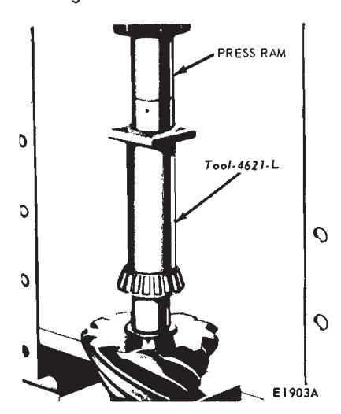
Fig. 37 — Installing Pinion Rear Bearing Cone
-
Remove the differential case from the carrier and remove the side bearings from the case.
-
Install new bearings on the case hubs, and again install the differential assembly in the carrier without the ring gear.
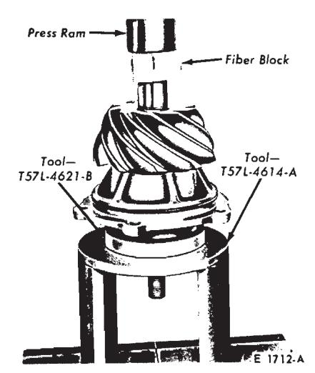
Fig. 39 — Installing Pinion Front Bearing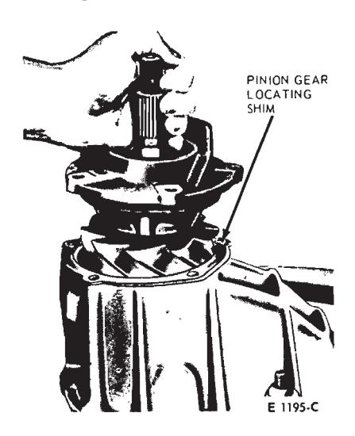
Fig. 40 — Removing or Installing Pinion and Retainer Assembly -
Check the case runout again with the new bearings. If the runout is now within limits, the old bearings were excessively worn. Use the new bearings for assembly. If the runout is still excessive, the case is damaged and should be replaced.
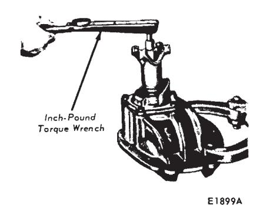
Fig. 41 — Checking Pinion Bearing Preload
Differential Carrier Assembly
Pilot Bearing Installation
- Drive the new pilot bearing inward until it bottoms, as shown in Fig. 35.
- Using the same tool indicated in Fig. 35, install the new pilot bearing retainer with the concave side up.
Collapsible Pinion Bearing Spacer Installation
-
Install the drive pinion rear bearing cone and roller on the pinion shaft (Figs. 36 or 37).
Place a new spacer on the pinion shaft (Fig. 38).
-
Place the bearing retainer on the pinion shaft, and install the front bearing cone and roller. Press the front bearing cone and roller into position as shown in Fig. 39. Be careful not to crush the bearing spacer.
-
Lubricate the O-ring with axle lubricant and install it in its groove in the pinion retainer. Be careful not to twist it. Snap the O-ring into position.
-
Place the proper shim on the carrier housing and install the pinion
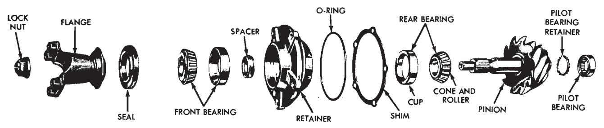
Fig. 38 — Pinion and Bearing RetainerAS END
PLAY
READS
(10/1000
inch) USE
THIS
SPACER0.481 1
0.480
play and2
0.479
preload3
0.4784
0.4785
0.476
exists:6 7
0.4748 9 0.472 10 0.470 11
0.47012 0.468 13
0.46814
0.46615
0.465IF PRELO AD READS S(in-lbs.) 2-11
0.48212-20
0.48321-30
0.48431-45
0.485Fig. 42 — Solid Spacer Selection and retainer assembly, being careful not to pinch the O-ring (Fig. 40).
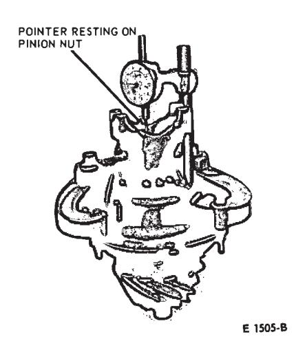
Fig. 43 — End Play Indicator Installation -
Install the pinion attaching bolts. Torque the bolts to specification.
-
Place the slinger over the pinion shaft and against the front bearing.
-
Install a new seal in the bearing retainer (Fig. 46).
-
Install the U-joint flange (Fig. 48).
-
Start a new integral nut and washer on the pinion shaft;
-
Hold the flange with the tool shown in Fig. 21 or Fig. 22, and torque the pinion shaft nut to 175 ft-lbs. Do not exceed 175 ft-lbs at this time.
-
Check the pinion bearing preload as shown in Fig. 41. Correct pre-load will be obtained when the torque required to rotate the pinion in the retainer is as specified in Part 15-7. If the torque required to rotate the pinion is less than specified, tighten the pinion shaft nut a little at a time until the proper preload is established. Do not overtighten the nut. If excessive preload is obtained as a result of overtightening, replace the collapsible bearing spacer.
Do not back off the pinion shaft nut to establish pinion bearing preload. If the torque on the pinion shaft nut is less than 175 ft-lbs after bearing preload is established, a new collapsible spacer must be used.
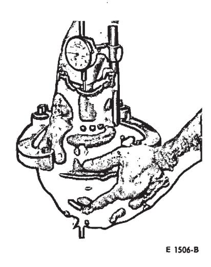
Fig. 44 — Checking Pinion End Play
Solid Pinion Bearing Spacer Installation
The spacer is serviced in 20 sizes listed in Specifications. The manner of selecting the size spacer required for obtaining correct preload is included in the following assembly procedure.
-
Install the drive pinion rear bearing cone and roller assembly on the pinion shaft as shown in Figs. 37 and 38.
-
Select a new solid spacer of a larger size (0.485 inch thick), and slide it over the pinion shaft against the rear bearing.
The pinion bearing preload can be accurately measured only when the pinion shaft nut is torqued to 180-220 ft-lbs. If a spacer smaller than required was used, the specified 180-220 ft-lbs torque would damage the bearings. For this reason, the largest spacer should be tried first. Then, if the bearings are too loose, the size of the spacer can be decreased until the correct preload is obtained.
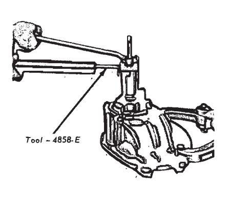
Fig. 45 — Installing U-Joint Flange -
Position the bearing retainer and cup assembly on the pinion shaft and install the front bearing cone and roller. Press the front bearing cone and roller assembly into position, as shown in Fig. 37.
-
Mount the retainer in a holding fixture as shown in Fig. 22, and place the slinger over the pinion shaft and against the front bearing.
-
Install the U-joint flange with the tool shown in Fig. 45.
-
Hold the flange with the tool shown in Fig. 22 or 23, and install the old pinion shaft nut. Using a ft-lb torque wrench, torque the nut to 180-220 ft-lbs. While tightening the nut, rotate the bearing retainer to determine the existence of any bearing preload which will be indicated by a slight drag in the rotation of the retainer.
Determining Spacer Size from Preload Reading
-
If bearing drag indicates a preload condition exists, apply an in-lb torque wrench to the pinion nut as shown in Fig. 41 and read the torque required to turn the shaft. Effort should be 12-1/2 to 32-1/2 in-lbs.
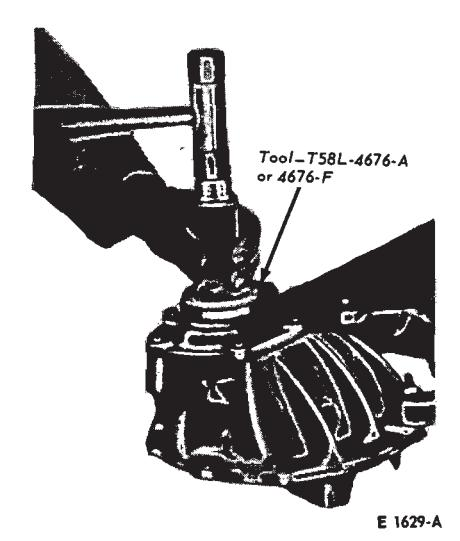
Fig. 46 — Installing Oil Seal -
If preload is the correct value proceed with assembly procedure given in Final Assembly of Pinion and Retainer, which follows.
-
If preload exists, but is below specification, select the correct spacer from Fig. 42 and install, completing assembly as shown in Final Assembly of Pinion and Retainer.
Determining Spacer Size from End Play Reading
- If no perceptible preload is felt when rotating the pinion shaft, install a dial indicator as shown in Fig. 43, so that the indicator point is resting on the end of the pinion gear shaft (companion flange end).
- Use both hands to squeeze the pinion shaft and the bearing retainer together (Fig. 44). Record the end play reading shown on the dial indicator.
- Disassemble the pinion shaft and retainer and install the correct spacer as shown in Fig. 42.
- Proceed with assembly of the pinion shaft and retainer as directed in Final Assembly of Pinion and Retainer.
Final Assembly of Pinion and Retainer
-
Install the drive pinion rear bearing cone and roller assembly on the pinion shaft as shown in Figs. 36 and 37.
-
Slide the correct spacer over the pinion shaft against the rear bearing.
-
Position the bearing retainer and cup assembly on the pinion shaft and install the front bearing cone and roll- - er. Press the front cone and roller into position, as shown in Fig. 45.
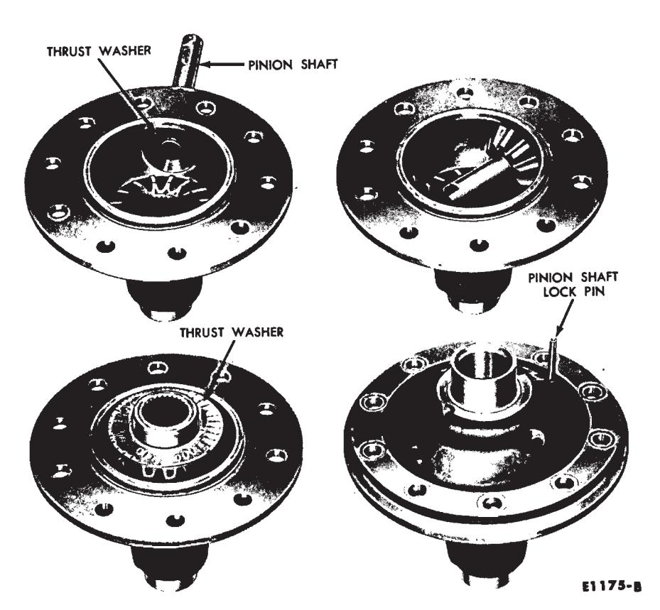
Fig. 47 — Assembling Differential Case -
Lubricate a new O-ring with axle lubricant and install it in the groove provided in the pinion retainer. Be careful not to twist the O-ring. Install it by snapping it into place.
-
Place the proper shim on the carrier housing and install the pinion and retainer assembly, being careful not to pinch the O-ring (Fig. 40).
-
Install the pinion retainer bolts. Torque the bolts to specification.
-
Place the slinger over the pinion shaft and against the front bearing.
-
Install a seal in the bearing retainer, (Fig. 46).
-
Start a new integral nut and washer on the pinion shaft.
-
Hold the companion flange with the tool shown in Fig. 21 or 22 and torque the pinion nut to specifications (200 ft-lbs).
-
With a new seal installed, pinion bearing preload should now read 17 to 32 in-lbs for new pinion bearings and new seal, or 8 to 14 in-lbs for original bearings and a new seal.
Assembly and Installation of Differential Case
Conventional Differential Case
-
Place a side gear and thrust washer in the differential case bore (Fig. 47). Lubricate all differential parts liberally with axle lubricant during assembly.
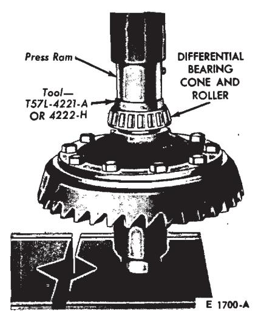
Fig. 48 — Installing Differential Bearing -
With a soft-faced hammer, drive the differential pinion shaft into the case only far enough to retain a pinion thrust washer and pinion gear.
-
Place the second pinion and thrust washer in position, and drive the pinion shaft into place. Carefully line up the pinion shaft lock pin holes.
-
Place the second side gear and thrust washer in position (Fig. 47), and install the cover on the differential case. Install the pinion shaft lock pin. A pinion or axle shaft spline can be inserted in the side gear spline to check for free rotation of the differential gears.
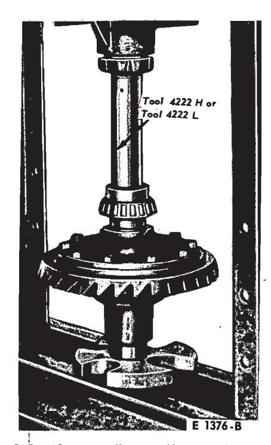
Fig. 49 — Installing Differential Bearing -
Insert two 7/16 (N.F.) bolts two inches long through the differential case flange, and thread them three or four turns into the ring gear as a guide in aligning the ring gear bolt holes. Press or tap the ring gear into position.
-
Install and tighten the ring gear bolts and washers evenly, and torque them alternately across the gear to specification.
-
If the differential bearings have been removed, press them on as shown in Figs. 48 and 49.
-
Wipe a thin coating of lubricant on the bearing bores so that the differential bearing cups will move easily.
-
Place the cups on the bearings. If the gear set is of the non-hunting or partial non-hunting type, assemble the differential case and ring gear assembly in the carrier so that the marked tooth on the pinion indexes between the marked teeth on the ring gear as shown in Fig. 50.
In almost every case of improper assembly (gears assembled out of time), the noise level and probability of failure will be higher than they would be with properly assembled gears.
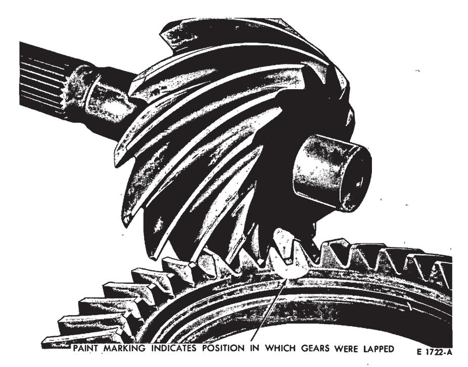
Fig. 50 — Gear Set Timing Marks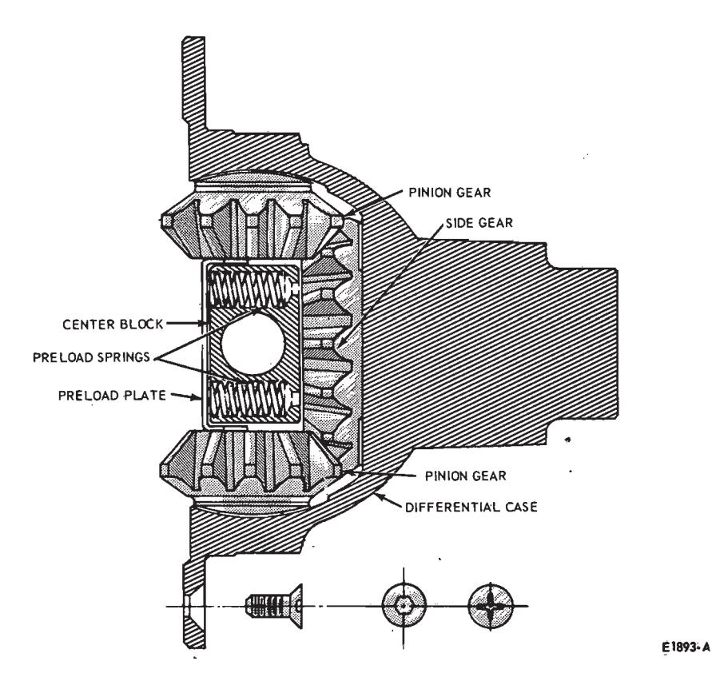
Fig. 51 — Center Block and Pre-Load Springs Installation—Traction-Lok DifferentialWhen installing the hunting type gear set (no timing marks), assemble the differential case and ring gear assembly in the carrier without regard to the matching of any particular gear teeth.
-
Slide the assembly along the bores until a slight amount of backlash is felt between the gear teeth.
-
Set the adjusting nuts in the bores so that they just contact the bearing cups. The nuts should be engaged about the same number of threads on each side.
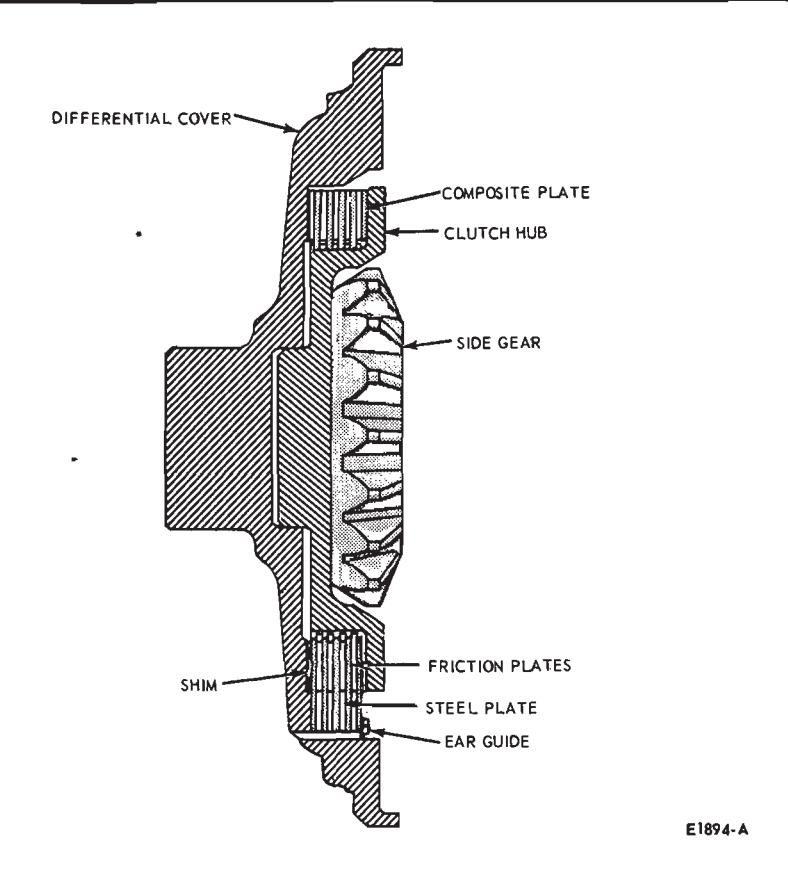
Fig. 52 — Clutch Pack Installation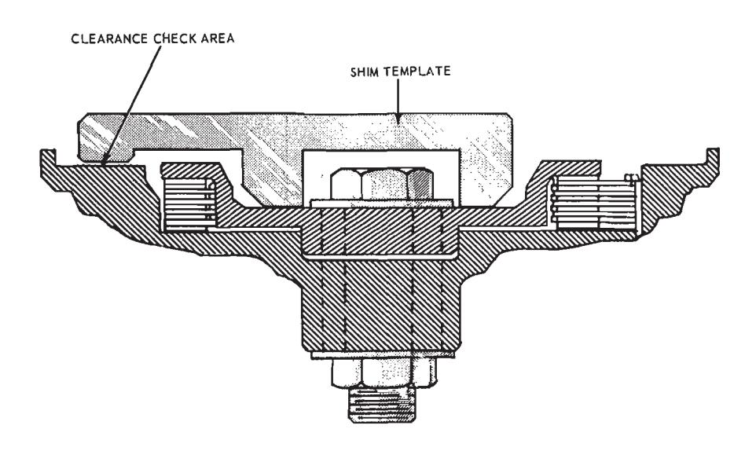
Fig. 53 — Shim Template Tool Application -
Carefully position the bearing caps on the carrier. Match the marks made when the caps were removed.
-
Install the bearing cap bolts and alternately torque them to speci- fication.
-
If the adjusting nuts do not turn freely as the cap bolts are tightened, remove the bearing caps and again inspect for damaged threads of incorrectly positioned caps. Tightening the bolts to the specified torque is done to be sure that the cups and adjusting nuts are seated. Loosen the cap bolts, and torque them to only 25 ft-lbs before making adjustments.
-
Adjust the backlash between the ring gear and pinion as outlined in Part 15-1, Section 2.
-
Be sure to make a final tooth pattern check before installing the carrier assembly in the axle housing.
Assembly of Traction-Lok Differential Case
-
Lubricate all parts with Ford Hypoid Lubricant (Ford Part No. C9AZ-19580-A, during assembly of differential.
-
Mount the differential case in a soft jawed vise and place a side gear thrust washer and side gear in the counterbore of the case.
-
Install the pinion thrust washers and place the pinion gears on the side gear; aligning the holes in the washers and gears with the holes in the case.
-
Install the center block so that the shaft holes are aligned with the holes in the pinion gears and case. The center block has two machined sides and two rough sides.
-
With a brass drift, drive in the long pinion shaft from the outside of the case aligning the lock pin holes in the shaft with the holes in the case. The center block should be positioned so the long shaft is driven through the rough side and short shafts (used with the four pinion differential) driven through the machined side (Fig. 51).
-
With a suitable drift, install the shaft lock pins. Make sure the pinion and side gears move freely.
-
Place the four pre-load springs in the holes provided in the center block.
-
Position a pre-load plate over the four springs, making sure the springs are properly seated. The preload plate straddles the center block over its narrower or machined width.
-
Mount the differential cover in a soft jawed vise or holding fixture.
-
Insert shim(s) of 0.050 total thickness in the cover cavity.
-
Install the composite plate (friction material on one side and steel on the opposite) on the back side of the clutch hub with the friction material against the hub; next, install a friction plate, then steel, friction, steel, friction, steel, friction, steel, friction, steel, friction, and lastly a steel plate (Figures 3 and 52). When new clutch plates are used, soak the plates in Ford Hypoid Lubricant (Ford Part No. C9AZ-19580-A) for approximately 30 min- utes before installation.
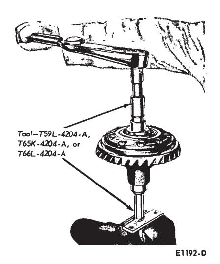
Fig. 54 — Checking Traction-Lok Differential Torque -
Place the clutch hub with the clutch plates into the clutch ear cavities in the differential cover. Make sure that the splines on the last friction plate are engaged on the hub.
-
Obtain locally a 5/8 inch x 2 1/2 inch or 9/16 inch x 2 1/2 inch bolt, nut and two 1 1/2 inch outside diameter flat washers approx. 1/8 inch in thickness. These parts are required to compress the clutch pack in order to obtain the proper shim selection.
Install a flat washer on the bolt, and place the bolt through the clutch hub. Hold the bolt in position and turn the cover over. Place a flat washer on the bolt and then install the nut. Be sure the washers are centered, and torque the nut 10 to 15 ft-lbs (Fig. 53)
-
Place the shim template tool (Ford Tool No. T68P-4946-A) in the clutch hub. Some clearance should be observed between the shim tool and the cover-to-case mating surface. Using a feeler gauge, determine the exact amount of clearance. Refer to the shim pack thickness chart specifications which will indicate the correct amount of shim(s) to subtract from the 0.050 shim originally installed. In order to correctly select the proper shim(s), the shim template tool and the chart must be used.
-
After the proper shim selection is determined, remove the bolt, nut and flat washers. If it is necessary to revise the shim thickness, remove the clutch hub and clutch plates.
-
Install the selected shim(s) in the cover cavity, reinstall the components as outlined in Steps 11 and 12.
-
Install the four steel clutch ear guides and side gear.
-
Place both assemblies in a press, and press the two halves together; then, insert the two Allen or Phillips head screws, and tighten evenly until tight. If a press is not available, any two stock bolts and nuts may be used opposite each other in the ring gear retaining holes to compress both halves.
-
Install the ring gear and ring gear bolts and washers. Tighten evenly and alternately across the diameter of the ring gear. Torque the bolts to 65-80 ft-lbs.
-
Prior to installation of the torque sensitive locking differential into a vehicle, a bench torque check must be made. Check the torque required to rotate one side gear while the other is held stationary (Fig. 54). The initial break-away torque may exceed 250 ft-lbs. The rotating torque required to keep the side gear turning with new clutch plates is 100 to 250 ft-lbs. With re-used clutch plates, the minimum torque required is 40 ft-lbs. (The torque may fluctuate 10-40 ft-lbs.).